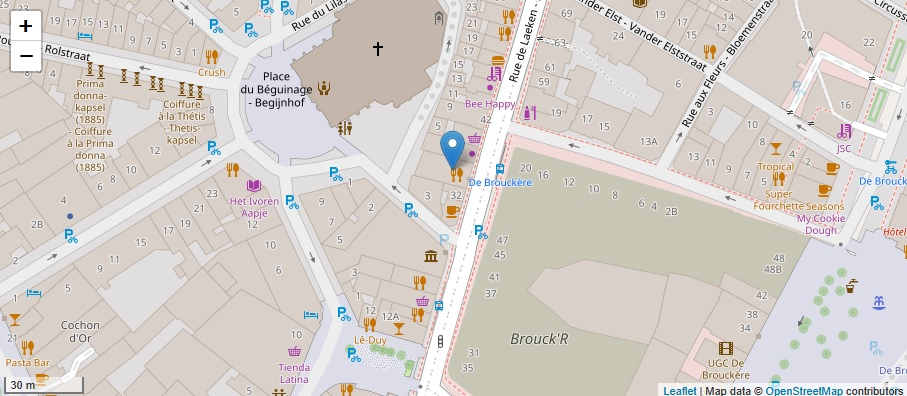

CONTACTER LE TOUKOUL
De 1 à 11 personnes vous pouvez réserver via
BOUTON DE RÉSERVATION
La réservation se fait uniquement par mail via
info@toukoul.be
34 rue de Laeken et 1 rue du Marronnier
1000 - Bruxelles
Téléphone:
+32 474 08 39 72
+32 2 223 73 77
HORAIRES OUVERTURE CUISINE
Lundi à vendredi
18h00 à 23h00
Samedi
12h00 à 15h30 / 18h00 à 23h00
Dimanche
12h00 à 15h30 / 18h00 à 22h30
HORAIRES OUVERTURE TOUKOUL
Les soirs: du lundi au dimanche
Les midis: samedi et dimanche
Comment rejoindre le Toukoul?
Le Toukoul est facilement accessible à pied ou en transports. Il se situe à deux pas de la place Sainte-Catherine.
À 5 minutes à pied de l’UGC De Brouckère, du centre historique, de l’opéra situé sur la place de la Monnaie ainsi que de l’ancienne Belgique, le Toukoul est le restaurant idéal pour débuter ou terminer une soirée au centre-ville.
Vous trouverez ci-dessous les principaux moyen de transports pour arriver à notre établissement.
Plus d'infos sur le site de la STIB.
Transports
Bus: 47 - 88 // Arrêt Béguinage
Tram: 3 - 4 - 31 - 32 // Arrêt De Brouckère
Metro: Ligne 1 - Ligne 5 // Arrêt De Brouckère
Parking
Interparking - Payant
Place De Brouckère 1 - 1000 Bruxelles
Jusqu'à 1 heure du matin (sauf vendredi et samedi jusqu'à 2 heures).
Parking 58 - Payant
Rue de l’Evêque 1 - 1000 Bruxelles
Jusque 1 heure du matin (sauf vendredi et samedi jusqu'à 2 heures).
Alhambra - Payant
Boulevard Emile Jacqmain 14 - 1000 Bruxelles

Rue de Laeken, 34 et Rue du Marronnier, 1
1000 Bruxelles
Tél.
+32 474 08 39 72 -
info@toukoul.be